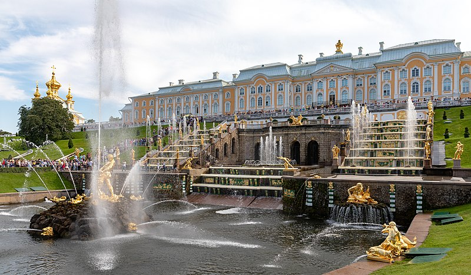

The Peterhof Palace, is a series of palaces and gardens located in Petergof, Saint Petersburg, Russia, commissioned by Peter the Great as a direct response to the Palace of Versailles by Louis XIV of France. Originally intending it in 1709 for country habitation, Peter the Great sought to expand the property as a result of his visit to the French royal court in 1717, inspiring the nickname of "The Russian Versailles". The architect between 1714 and 1728 was Domenico Trezzini, and the style he employed became the foundation for the Petrine Baroque style favored throughout Saint Petersburg. Also in 1714, Jean-Baptiste Alexandre Le Blond, likely chosen due to his previous collaborations with Versailles landscaper André Le Nôtre, designed the gardens. Francesco Bartolomeo Rastrelli completed an expansion from 1747 to 1756 for Elizabeth of Russia. The palace-ensemble along with the city center is recognized as a UNESCO World Heritage Site.
